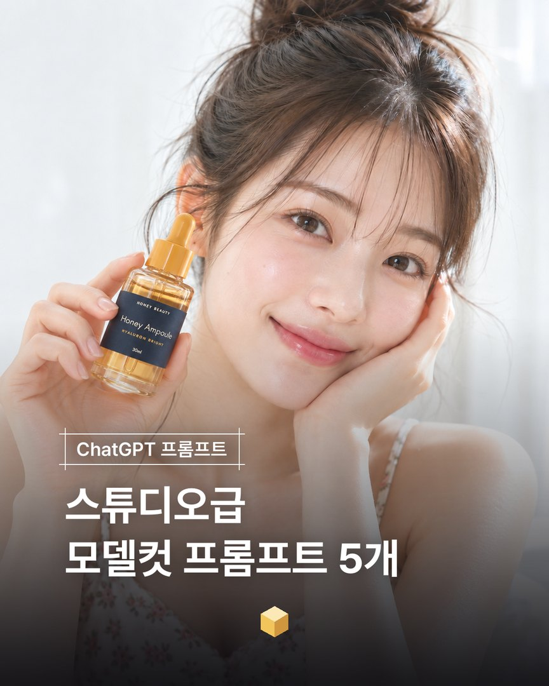
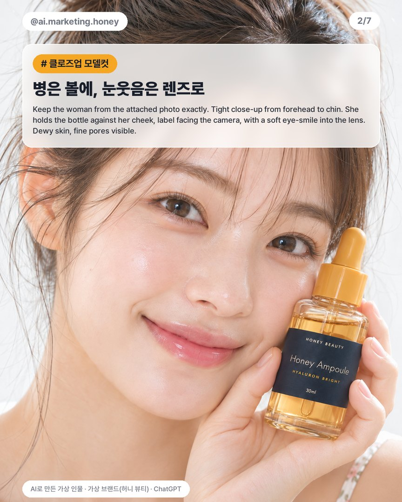
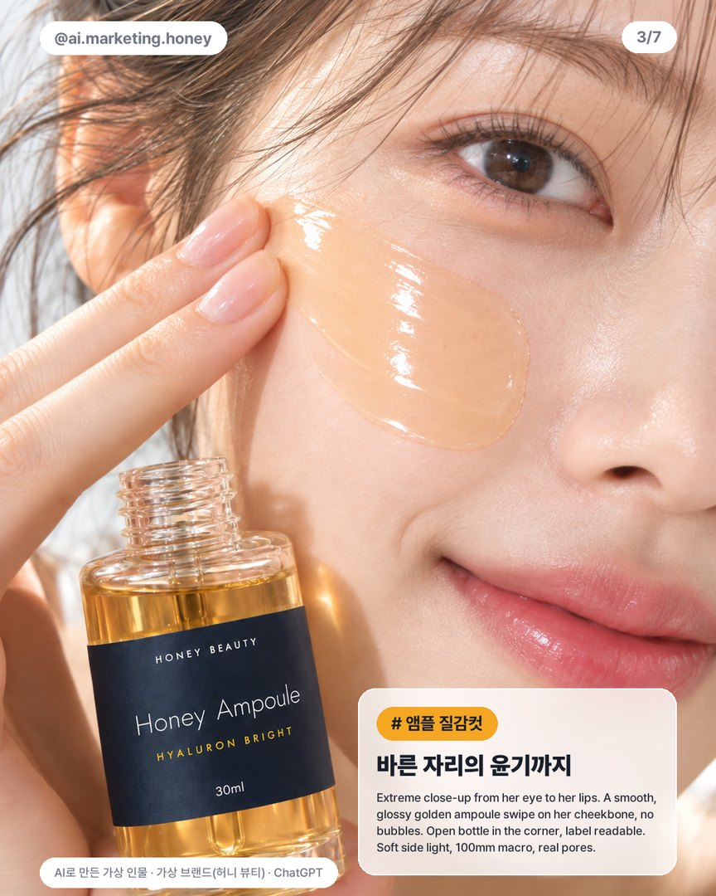
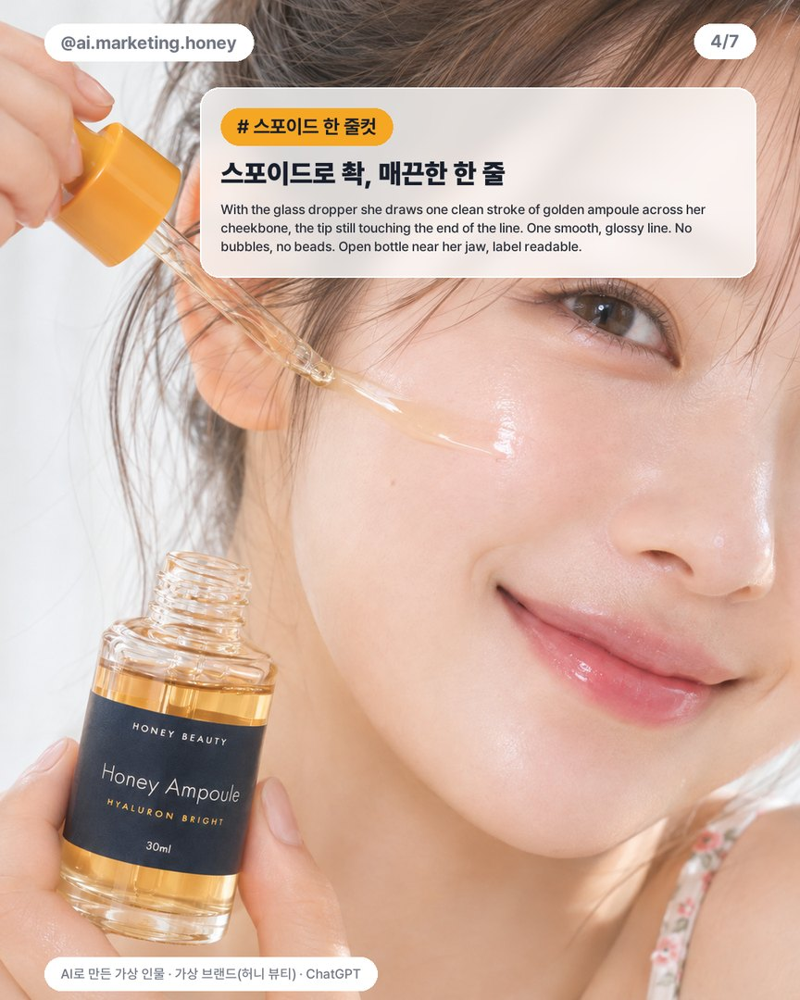
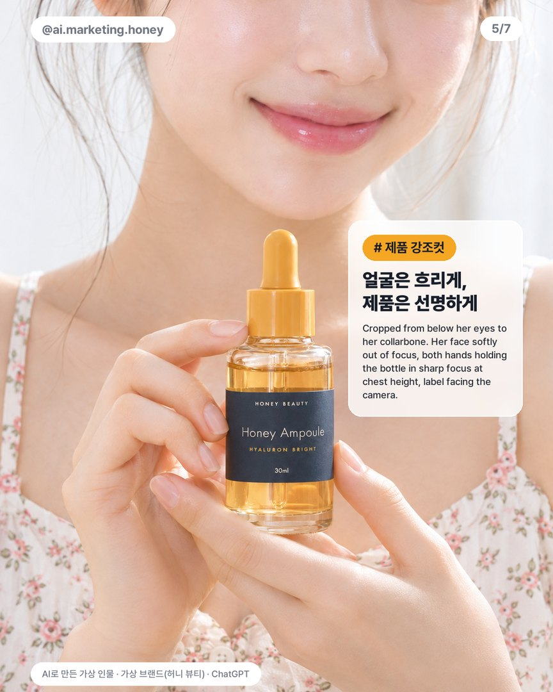
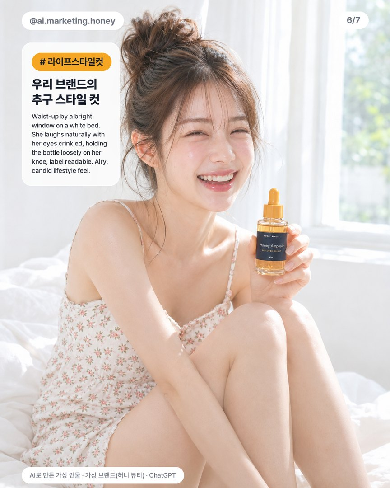
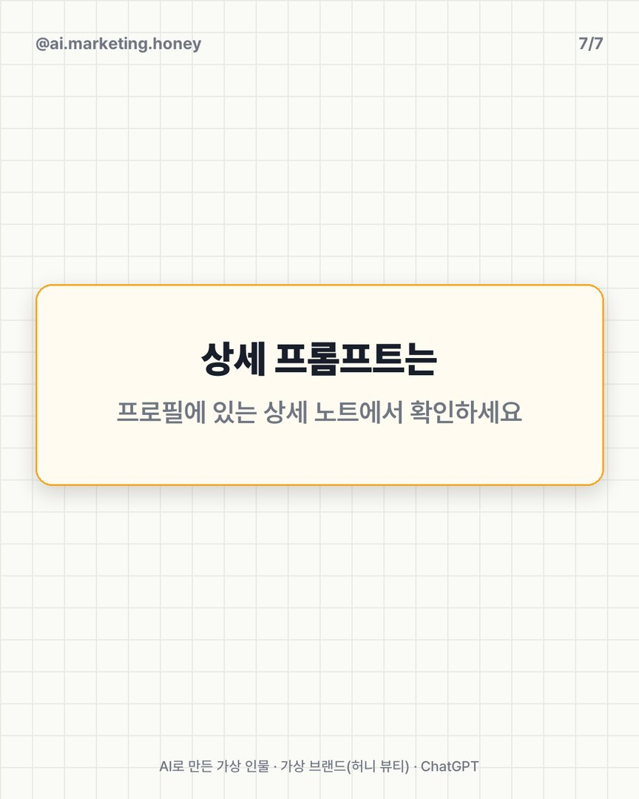
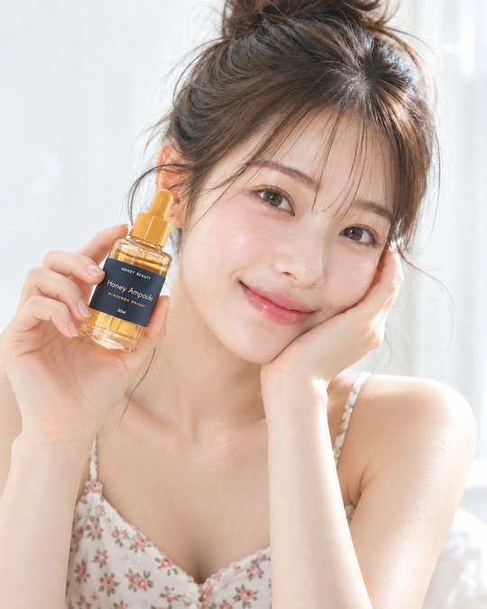
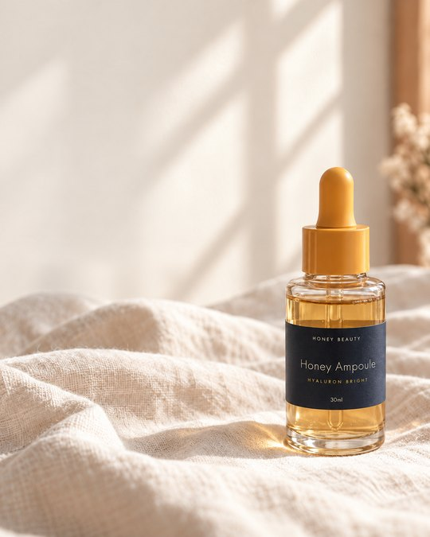

EP.26 · AI 모델컷
스튜디오급
스튜디오급
모델컷 프롬프트 5개
모델 사진 한 장과 제품 사진 한 장을 첨부하고, 컷마다 프롬프트만 바꿔 ChatGPT로 뽑아요. 컷이 바뀌어도 같은 사람, 같은 라벨로 나오게 하는 공통 문장과 컷별 프롬프트 전문이에요.
01캐러셀 다시 보기







옆으로 넘겨 보세요 →
02먼저 준비할 사진 2장
- 모델 사진마음에 드는 모델컷 한 장이에요. 얼굴 기준이 돼요.
- 제품 사진라벨 글자까지 확정한 제품 사진이에요. 이 예시는 가상 브랜드 '허니 뷰티' 앰플이에요.
- 요청ChatGPT에 두 장을 첨부하고, 아래 공통 문장 뒤에 컷 프롬프트를 이어 붙여요.


03모든 컷 앞에 붙이는 공통 문장
공통 문장
The first attached photo is the model; the second is the product. Keep the woman from the first photo exactly — same face, eyes, see-through bangs and messy high bun — do not change or beautify her face. Use the product exactly as in the second photo (clear glass dropper bottle, mustard-yellow dropper cap, golden liquid, navy label "HONEY BEAUTY", "Honey Ampoule", "HYALURON BRIGHT", "30ml"), label readable. Same bright soft daylight and airy white mood as the first photo. Vertical 4:5, premium K-beauty campaign photo, real skin texture, not airbrushed.
💡 제품 설명(병 색, 라벨 글자)은 우리 제품에 맞게 바꿔 쓰세요.
04컷별 프롬프트 5개
1. 클로즈업 모델컷
Tight close-up from her forehead to her chin, face filling the frame. She holds the bottle (cap on) right against her cheek, label facing the camera, and gives a soft eye-smile straight into the lens. Dewy glowing skin, fine pores visible.
💡 모델 사진과 제품 사진을 같이 첨부하면 얼굴과 라벨이 그대로 나와요.
2. 앰플 질감컷
Extreme close-up from her eye to her lips. A smooth, glossy golden ampoule swipe on her cheekbone, no bubbles. Open bottle in the corner, label readable. Soft side light, 100mm macro, real pores.
💡 기포가 생기면 새로 만들지 말고 아래 "기포만 지우기"로 고쳐요.
3. 스포이드 한 줄컷
Close-up from her eye down to her lips: with the glass dropper she draws one clean diagonal stroke of golden ampoule from below her eye toward her ear, the tip still touching the end of the line. One smooth, glossy, perfectly clear line — no bubbles, no beads. The open bottle (no cap — the cap is the dropper) held near her jaw, label readable.
💡 'no bubbles, no beads'처럼 빼고 싶은 걸 직접 적어요.
4. 제품 강조컷
Detail shot cropped from just below her eyes to her collarbone: her lower face with a soft smile and glossy lips is gently out of focus while both hands hold the bottle in sharp focus at chest height, label facing the camera. Floral camisole, soft natural nails, light catching the golden liquid.
💡 'label facing the camera, readable'을 적으면 라벨이 또렷해요.
5. 라이프스타일컷
Wider shot from the waist up: she sits by a bright window on a white bed in the floral camisole, knees drawn up, laughing naturally with her eyes crinkled, holding the bottle loosely in one hand on her knee, label readable. Airy, candid lifestyle feel, lots of soft white light.
💡 'laughing naturally, candid'를 넣으면 포즈를 잡은 티가 덜 나요.
05고칠 때는 새로 뽑지 말고
앰플의 기포만 지우기 (결과 사진 첨부)
Edit the attached photo. Keep absolutely everything else identical — the model, her face, eye, lips, hair, hand and fingers, the bottle and every letter of its label, lighting, colors and framing. Only change the golden ampoule on her cheek: remove every bubble, bead, droplet and grainy speck so it becomes one smooth, even, glossy and perfectly clear liquid layer with clean edges and a soft mirror-like highlight, like a single smooth swipe of ampoule. Same shape and position on the cheek.
💡 "다른 건 그대로"를 먼저 말하고, 바꿀 곳을 하나만 적어요. 새로 뽑으면 얼굴이나 라벨까지 달라질 수 있어요.
06이 세 가지만 기억하세요
'예쁘게·애교살' 같은 단어는 빼기
넣을수록 성형한 얼굴이 나와요.
모델컷 + 라벨 확정한 제품 사진 첨부
컷이 바뀌어도 같은 사람, 같은 라벨로 나와요.
고칠 땐 새로 말고 "이것만"
다른 건 그대로 두고 한 군데만 고쳐요.
07쓰기 전에 꼭
- 실제 사람 사진을 기준으로 쓸 때는 초상권 동의를 먼저 확인하세요.
- 라벨 글자는 원본 제품과 한 글자씩 대조하고 쓰세요. 비슷해 보여도 바뀔 수 있어요.
- 광고에 AI 인물을 쓰면 매체 규정에 맞게 AI 생성 표기를 확인하세요. 효능을 말하는 문구는 광고 심의 기준으로 따로 검토하세요.
실무에서 바로 쓰는 AI 활용법, 하나씩 올려요.
대행사에서 AI 교육하는 현직 마케터가 직접 써 보고 정리해요.
인스타에서 팔로우